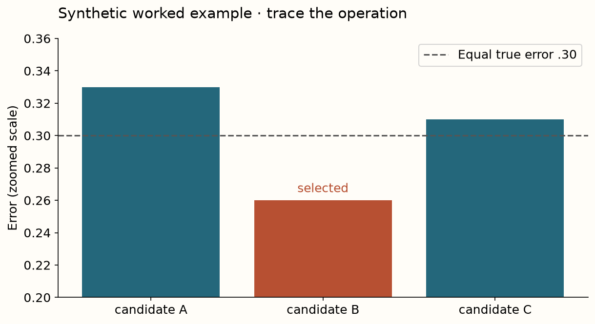

When validation becomes training
A computation and evidence reference
Core distinction
No, validation selects lucky noise; test performance remains chance in expectation.
Implementation contract
| Operator | Required behavior |
|---|---|
choose_validation | Choose the first finite minimum validation error; reject empty/nonfinite vectors. |
null_search | Build the pure-noise negative control with separate validation/test RNG streams. Generate test predictions only after the validation choice. |

Measured evidence and limit
Searching 256 noise candidates reduces mean selected validation error from 0.496 to 0.342, while mean independent test error is 0.498. The mean optimism is 0.156; its Monte Carlo standard error is 0.0017. This controlled result establishes selection bias without introducing predictive signal.
Before making a claim
- Identify source, model/checkpoint and data versions.
- Trace which labels enter each computation.
- State what is fixed, varied and measured.
- Use the right uncertainty and aggregation unit.
- Name the unrun comparison and a falsifying experiment.
Primary reading: Cawley and Talbot 2010. Exact regeneration contract.
Selection-bias trace¶
Two equally good candidates each report 0.4 or 0.6 with equal probability. The expected selected minimum is 0.45, although both true losses are 0.5. Independent test performance stays 0.5 in expectation.
| Quantity | What it measures |
|---|---|
| Selected validation loss | Performance after conditioning on selection noise |
| Independent test loss | Evaluation of the selected candidate |
| Monte Carlo SE | Precision of a repeated simulation estimate |
| Outer nested score | Performance of the complete inner selection procedure |
Nest feature selection, checkpoint choice and combiner adaptation as well as hyperparameter search. A random seed makes an experiment reproducible; the generation and split logic establish its information boundary.